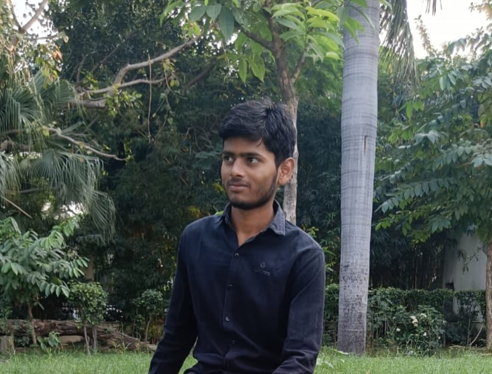

UTKARSH VERMA'S PORTFOLIO
Hello, I am UTKARSH VERMA! Here you can find my resume.

UTKARSH VERMA
E-Mail : utkarshvermaone@gmail.com
Mobile Number : **********
Address : B – 148 Barra – 7, Kanpur Nagar, Uttar Pradesh – 208027
CAREER OBJECTIVE
I am dedicated to securing an opportunity where I can maximize my potential and significantly contribute to the organization’s growth.
EDUCATIONAL QUALIFICATION
- Pursuing Graduation (Expected – 2027): Bachelor of Computer Application from C.S.J.M. University.
- Completed Intermediate from U.P. Board in 2024.
- Completed High School from U.P. Board in 2022.
OTHER QUALIFICATION
- Master Diploma in Computer Information and System Management from Excel Net Institute.
- Earned a certificate for demonstrating proficiency in front-end development, including creating responsive and visually appealing web pages.
SKILLS
- Frontend Development : HTML, CSS, Java Script | Learning : React and Redux
- System Programming : C Programming
- Operating System : Windows
- Software: MS Office
PROJECTS
REALME WEBSITE Clone
- Developing a responsive frontend clone of Realme's official website using HTML and CSS, focusing on replicating its clean design, dynamic product showcases, and seamless navigation across devices.
ZOMATO Clone
- Crafting a responsive, pixel-perfect clone of the Zomato website with HTML and CSS, capturing its dynamic design, vibrant interface, and intuitive navigation. This project emphasizes visually engaging layouts and a user-friendly experience, optimized for flawless performance on all devices.
DECLARATION
I hereby declare that the information provided in this resume is true and accurate to the best of my knowledge.
PLACE : KANPUR NAGAR
UTKARSH VERMA